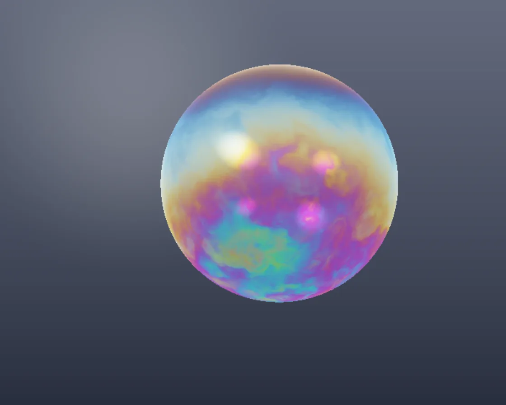

Soap bubble
Soap bubble is a WebGL effect: thin-film interference from a draining, swirling film thickness. One plain JavaScript file with no dependencies; add it with npx motion-library add soap-bubble.

Open it live, tune it and copy the code
What is Soap bubble?
A floating soap bubble wobbles while swirling rainbow colours flow over it.
How does Soap bubble work?
Thin-film interference from film thickness, angle and wavelength; thickness drains under gravity and is stirred by noise, with Fresnel reflections on both walls.
How do I add Soap bubble to my website?
- In your project folder, run
npx motion-library add soap-bubble. It writesanimations/soap-bubble.js. Needs Node 18 or newer. - Import it and call it with a container element that has a size:
import fx from './animations/soap-bubble.js'; const stop = fx(document.querySelector('#hero')); - Call
stop()to clean up, for example when a component unmounts.
Every setting below is also a flag, so you can install it already tuned: npx motion-library add soap-bubble --thickness 2.
What settings can I tweak?
| Setting | Flag | Default | Range | Step |
|---|---|---|---|---|
| Film thickness | --thickness | 1 | 0.3 to 2 | 0.05 |
| Swirl | --swirl | 1 | 0 to 3 | 0.05 |
Specifications
- Renderer
- WebGL
- Category
- Chrome & 3D
- Dependencies
- None
- File size
- 6.0 KB, unminified
- Interactive
- No: it plays on its own
- Reduced motion
- Plays the same for everyone
- Licence
- MIT-0: use it anywhere, no credit needed
Source code
// Soap bubble: its colours are thin-film interference. Light reflects off both the outer and inner surface of a film a
// few hundred nanometres thick; the two reflections add or cancel depending on the thickness, the viewing angle and
// the wavelength, so each spot shows a different colour. The film drains (thicker at the bottom, thin and dark at the
// top) and swirls, so the colours flow. Both the front and back of the bubble reflect a soft room, mostly at the edges
// (Fresnel), and the bubble wobbles as it floats.
const PARAMS = { thickness: 1, swirl: 1 };
export default function (stage) {
const canvas = document.createElement('canvas');
canvas.style.cssText = 'position:absolute;inset:0;width:100%;height:100%;display:block';
stage.append(canvas);
const gl = canvas.getContext('webgl2', { antialias: false });
if (!gl) { stage.textContent = 'This needs WebGL2.'; return () => canvas.remove(); }
const vs = `#version 300 es
in vec2 p; out vec2 uv; void main() { uv = p * .5 + .5; gl_Position = vec4(p, 0, 1); }`;
const fs = `#version 300 es
precision highp float; in vec2 uv; out vec4 o;
uniform vec2 R; uniform float T, TH, SW; uniform vec3 C;
// 3D noise sampled on the sphere itself, so there is no seam where an angle would wrap round
float hash(vec3 p) { p = fract(p * .3183099 + .1); p *= 17.; return fract(p.x * p.y * p.z * (p.x + p.y + p.z)); }
float noise(vec3 x) { vec3 i = floor(x), f = fract(x); f = f * f * (3. - 2. * f);
return mix(mix(mix(hash(i), hash(i + vec3(1, 0, 0)), f.x), mix(hash(i + vec3(0, 1, 0)), hash(i + vec3(1, 1, 0)), f.x), f.y),
mix(mix(hash(i + vec3(0, 0, 1)), hash(i + vec3(1, 0, 1)), f.x), mix(hash(i + vec3(0, 1, 1)), hash(i + 1.), f.x), f.y), f.z); }
float fbm(vec3 p) { float s = 0., a = .5; for (int i = 0; i < 5; i++) { s += a * noise(p); p = p * 2.03 + 1.7; a *= .5; } return s; }
// interference colour of a soap film (n = 1.33), thickness d in nm, for light at angle cosT inside the film
vec3 film(float d, float cosT) {
vec3 lam = vec3(650., 532., 450.);
vec3 ph = 4. * 3.14159 * 1.33 * d * cosT / lam;
return .5 - .5 * cos(ph + 3.14159); // the half-wave flip at the outer surface
}
vec3 room(vec3 d) { // a soft studio: two windows and a warm floor
vec3 c = mix(vec3(.05, .05, .05), vec3(.32, .34, .38), smoothstep(-.3, .5, d.y));
c += vec3(2.5) * smoothstep(.3, .0, length(d.xy - vec2(-.55, .45))) * step(0., -d.z);
c += vec3(1.6, 1.4, 1.1) * smoothstep(.22, .0, length(d.xy - vec2(.6, .3))) * step(0., -d.z);
return c;
}
vec3 aces(vec3 x) { return clamp((x * (2.51 * x + .03)) / (x * (2.43 * x + .59) + .14), 0., 1.); }
// the film's thickness over the bubble: drained toward the bottom, stirred by swirls that drift up
float thick(vec3 n) {
vec3 s = n * 2.2;
float sw = fbm(s + vec3(T * .05, -T * .14, T * .03) * SW + fbm(s * 1.6 - T * .08 * SW) * 1.8 * SW);
return TH * (90. + 430. * (.5 - .5 * n.y) * (.5 + .9 * sw)); // thin and vivid at the top, thicker below
}
void main() {
vec2 q = (uv * 2. - 1.) * vec2(R.x / R.y, 1.);
vec3 ro = vec3(0, 0, -4), rd = normalize(vec3(q, 2.4));
vec3 bg = mix(vec3(.025, .03, .045), vec3(.09, .1, .13), uv.y) + .05 * smoothstep(.9, .0, length(q - vec2(-.6, .5)));
vec3 col = bg;
// the bubble: a sphere whose radius wobbles a little with direction
vec3 oc = ro - C; float rad = .95, b = dot(oc, rd), c = dot(oc, oc) - rad * rad, h = b * b - c;
if (h > 0.) {
h = sqrt(h);
for (int s = 0; s < 2; s++) { // back wall first, then the front over it
float t = s == 0 ? -b + h : -b - h;
vec3 p = ro + rd * t, n = normalize(p - C);
n = normalize(n + .04 * vec3(sin(n.y * 5. + T * 1.7), sin(n.z * 4. + T * 1.3), sin(n.x * 6. + T * 2.1))); // wobble
vec3 nn = s == 0 ? -n : n;
float cosI = abs(dot(nn, rd)), cosT = sqrt(1. - (1. - cosI * cosI) / 1.77);
float F = .04 + .96 * pow(1. - cosI, 5.);
vec3 refl = room(reflect(rd, nn));
vec3 irid = film(thick(n), cosT);
vec3 layer = refl * irid * (.6 + 2.6 * F) + irid * .07 + refl * F * .25;
col = col * (1. - .06) + layer * (s == 0 ? .55 : 1.);
}
}
col = aces(col * 1.1);
o = vec4(pow(col, vec3(1. / 2.2)), 1);
}`;
const sh = (t, s) => { const x = gl.createShader(t); gl.shaderSource(x, s); gl.compileShader(x); if (!gl.getShaderParameter(x, gl.COMPILE_STATUS)) throw new Error(gl.getShaderInfoLog(x)); return x; };
const prog = gl.createProgram(); gl.attachShader(prog, sh(gl.VERTEX_SHADER, vs)); gl.attachShader(prog, sh(gl.FRAGMENT_SHADER, fs)); gl.bindAttribLocation(prog, 0, 'p'); gl.linkProgram(prog); gl.useProgram(prog);
gl.bindBuffer(gl.ARRAY_BUFFER, gl.createBuffer()); gl.bufferData(gl.ARRAY_BUFFER, new Float32Array([-1, -1, 3, -1, -1, 3]), gl.STATIC_DRAW);
gl.enableVertexAttribArray(0); gl.vertexAttribPointer(0, 2, gl.FLOAT, false, 0, 0);
const U = {}; ['R', 'T', 'TH', 'SW', 'C'].forEach(n => U[n] = gl.getUniformLocation(prog, n));
const resize = () => { const w = stage.clientWidth || 1, h = stage.clientHeight || 1, d = Math.min(devicePixelRatio, Math.max(1, Math.sqrt(400000 / (w * h)))); canvas.width = w * d | 0; canvas.height = h * d | 0; gl.viewport(0, 0, canvas.width, canvas.height); };
const ro = new ResizeObserver(resize); ro.observe(stage); resize();
let raf; const t0 = performance.now();
function frame(now) {
const t = (now - t0) / 1000;
gl.uniform2f(U.R, canvas.width, canvas.height); gl.uniform1f(U.T, t); gl.uniform1f(U.TH, PARAMS.thickness); gl.uniform1f(U.SW, PARAMS.swirl);
gl.uniform3f(U.C, Math.sin(t * 0.31) * 0.25, Math.sin(t * 0.47) * 0.15, 0); // it floats about
gl.drawArrays(gl.TRIANGLES, 0, 3);
raf = requestAnimationFrame(frame);
}
raf = requestAnimationFrame(frame);
return () => { cancelAnimationFrame(raf); ro.disconnect(); gl.getExtension('WEBGL_lose_context')?.loseContext(); canvas.remove(); };
}